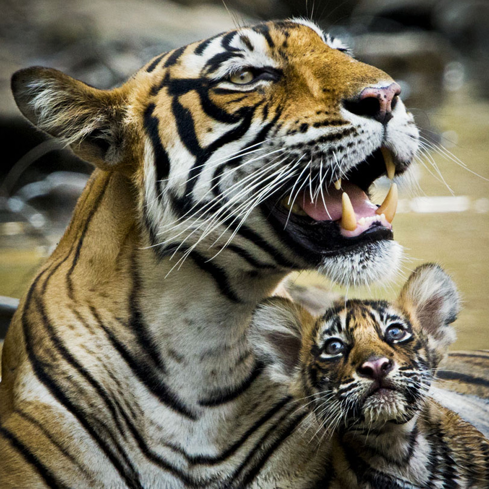

The tiger is the largest member of the felid (cat) family. They sport long, thick reddish coats with white bellies and white and black tails. Their heads, bodies, tails and limbs have narrow black, brown or gray stripes. There were once nine subspecies of tigers: Bengal, Siberian, Indochinese, South Chinese, Sumatran, Malayan, Caspian, Javan and Bali. Of these, the last three are extinct, one is extinct in the wild, and the rest are endangered.Tigers mainly eat ambar deer, wild pigs, water buffalo and antelope. Tigers are also known to hunt sloth bears, dogs, leopards, crocodiles and pythons as well as monkeys and hares. Old and injured tigers have been known to attack humans and domestic cattle.
Tigers occupy a variety of habitats from tropical forests, evergreen forests, woodlands and mangrove swamps to grasslands, savannah and rocky country. They are mostly nocturnal (more active at night) and are ambush predators that rely on the camouflage their stripes provide. Tigers use their body weight to knock prey to the ground and kills with a bite to the neck. They are also very good swimmers and have been known to kill prey while swimming.Tigers essentially live solitary lives, except during mating season and when females bear young. They are usually fiercely territorial and have and mark their large home ranges.